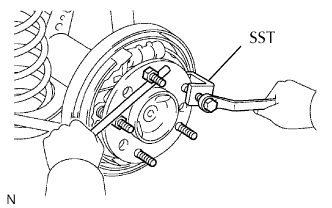
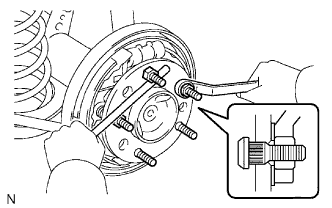

BU LÔNG MOAYƠ CẦU SAU > THAY THẾ |
| 1. THÁO BÁNH XE SAU |
| 2. THÁO TRỐNG PHANH |
| 3. THÁO BU LÔNG MOAYƠ CẦU SAU |
|  |
Lắp tạm thời 2 đai ốc vào các bu lông moay ơ như được chỉ ra trên hình vẽ.
Dùng SST và thanh đồng hoặc dụng cụ tương đương để giữ trục cầu, tháo bu lông moayơ.
| 4. LẮP BU LÔNG MOAYƠ CẦU SAU |
|  |
Lắp một đệm phẳng và đai ốc vào bu lông moay ơ mới, như được chỉ ra trên hình vẽ.
Dùng thanh đồng hay dụng cụ tương đương để giữ trục cầu xe, lắp bu lông moay ơ bằng cách xiết chặt đai ốc.
Tháo 2 đai ốc ra khỏi các bu lông moayơ.
| 5. LẮP TRỐNG PHANH |
| 6. LẮP BÁNH XE SAU |